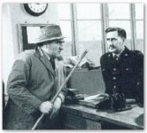

DETECTIVE CLUFF
"Sergeant Caleb Cluff (Leslie Sands) who first appeared in an episode of the anthology series 'Detective' (an episode entitled 'The Drawing' broadcast on 6th April, 1964) was a plodding sort of detective, much more at home taking a good walk with his pipe in his mouth, his chestnut walking stick in his hand and his faithful dog, Clive (a half-breed black and tan) by his side. But any no-gooder underestimating the tweed-suited detective would do so at their own cost because Cluff's slow methodology belied a skilfully perceptive insight into human nature and behaviour, particularly in the criminal mind. This slow style of his was often the cause of much frustration from his superior, Inspector Mole (originally played by Eric Barker and later Michael Bates), but no one could argue with Cluff's detection rate and his junior sidekick DC Barker (John Rolfe) certainly benefited from working alongside the bachelor sergeant who lived alone with daily visits from his housekeeper, Annie Croft (Olive Milbourne) in the fictional Yorkshire moorland town of Gunnershaw. The series was created and written by Gil North and ran for two series, Terence Dudley and Alan Seath sharing the production credits. Cluff was fairly described as a sort of �Maigret of Yorkshire� and in fact Rupert Davies as Maigret introduced the first episode. 19 episodes of 50 minute duration BBC TV 1964-65." (Source: http://www.televisionheaven.co.uk/overview3.htm#cluff)
SOLVE THIS!
Are you a "Detective Cluff" or a "Defective Cluff"? Here is a selection of Tuffcluff mysteries currently under investigation. How many can you solve?
Who crashed a car into the Hassell's dump trailer?
Who hid the Emigrant Saga tape - again?
Who threw away Diana's favorite junk in the barn?
Who put a speculum in the medicine cabinet?
Who poisoned the family at Cluffmas 2006?
Who keeps defaulting on their promises to visit the Lanyons in England?
Who stole the cookie from the cookie jar?
What guilty secret is buried beneath the massive mounds of dirt in the Cluff's yard?
Why aren't any of the first or second batch kids called "Uncle" or "Aunt" by their nieces and nephews?!
BENJAMIN CLUFF
"Benjamin Cluff, Jr. (7 February 1858 in Provo, Utah � 16 June 1948 in California) was the first President of Brigham Young University, and the school's third principal. Under his administration, the students and faculty more than doubled in size, and the school went from an academy to a university and was officially incorporated by The Church of Jesus Christ of Latter-day Saints. Cluff changed class periods from half an hour to a full hour, adopted the official colors of the university, started summer school and the Alumni Association, encouraged the university's first student newspaper (White and Blue), provided the first student loans and developed an intercollegiate sports system. The Cluff Building on BYU's Provo campus is named for him." (Source: Wikipedia)
CLOUGHIE
"Brian Howard Clough, OBE (21 March 1935 � 20 September 2004) was a successful footballer and subsequently football manager, most notable for his success with Derby County and Nottingham Forest. A charismatic and often controversial figure, Clough is widely considered to be one of the greatest managers in British football history. His achievement of winning back-to-back European Championship Cup wins with an unfashionable provincial side - Nottingham Forest is considered to be one of the greatest achievments in football history." (Source: Wikipedia)
CLUFF LAKE AIRPORT/MINE
"Cluff Lake Airport is located near to Cluff Lake, Saskatchewan, Canada. This aerodrome serves a now-closed uranium mine.
Cluff Lake mine Located, about 700km from Saskatoon, Saskatchewan, is owned and operated by COGEMA Resources. The mine ceased uranium production at the end of 2002 when the ore reserves were depleted. It was originally scheduled to shut down in 2000, but higher ore grades and operational ingenuity by employees and contractors allowed production to continue for an additional two years. Total production during the mine's 22-year operating life was over 62 million pounds of yellowcake, making it one of the most successful uranium mining operations in Canadian history. The Cluff Lake decommissioning project is the final chapter in the mine's history. The plan involves two years of active decommissioning, followed by several years of onsite monitoring and then long-term monitoring. When decommissioning is complete, the site is expected to have no significant adverse effects on the environment in the short or long-term." (Source: Wikipedia)
CLUFFS CAY
An island in the Bahamas! Whoo hoo!
CLUFFS CROSSING
A crossing place situated in Rockingham County, New Hampshire. Its geographical coordinates are 42� 45' 55" North, 71� 13' 5" West.
CLOUGH
Clough (in Irish: An Chloch, ie the stone (castle)) is a village in County Down, Northern Ireland. It is situated approximately 3 miles from Dundrum on the A2 road between Newcastle and Belfast. It had a population of 255 people in the 2001 Census. Clough is situated in the Down District Council area. (Source: Wikipedia)